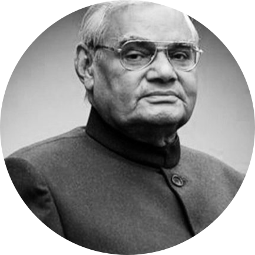
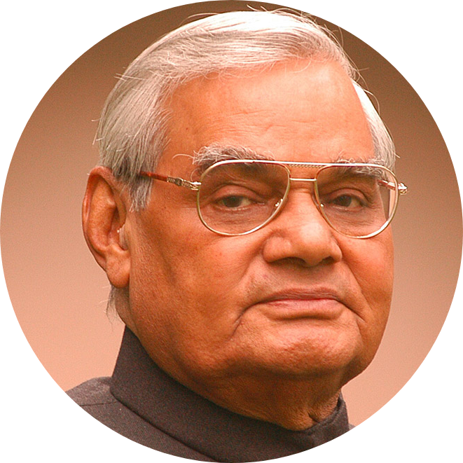
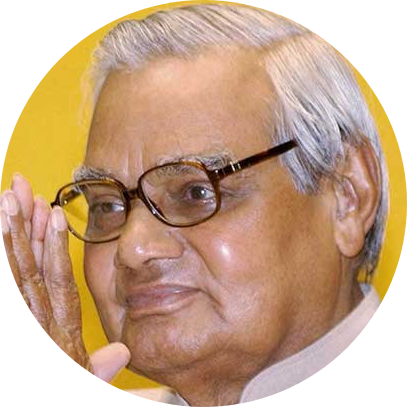
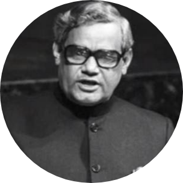
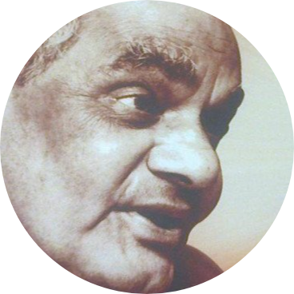
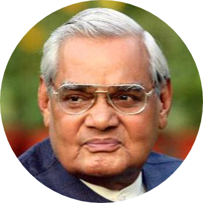
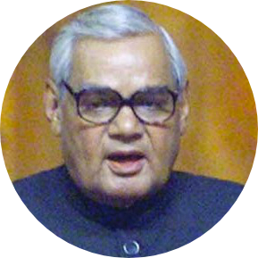

Atal Bihari Vajpayee
1924-2018
One Of The Greatest Politician of 21st Century
Atal Bihari Vajpayee was a leader of the Pro-Hindu Bhartiya Janta Party(BJP) and twice
served as prime minister of India(1996 and 1998-2004).Under his leadership India achieved steady economic growth,and the country became a world leader in information technology

Major time line of Vajpayee's life
-
25 Dec 1924- Born on 25 dec 1924 at Gwalior state,Madhya Pradesh
-
1942 - Joins Quit India Movement,jailed during the freedom struggle.
-
1951 - Becomes the leader of Jana Sangh;elected tyo Lok Sabha for the first time.
-
1962 - Elected to Rajya Sabha.
-
1968 - President,Bhartiya Jana Sangh (1968-1973)
-
1975 - Placed Under house arrest during Emergency.
-
1977 - Becomes founder-member of Janata Party (1977-1980),External Affairs Minister in Janata Party Government.
-
1980 - President,BJP(1980-1986)
-
1984 - Loses Lok Sabha election to Madhavrao Scindia from his hometown Swalior
-
1992 - Conferred Padma Vibhusan.
-
1996 - Becomes PM,but government lasts only 13 days.
-
1998 - NDA comes to power again,sworn in as PM for the second time.His government carries out a series of successful nuclear tests at Pokhran and India declares itself a nuclear weapons state.
-
1999 - Bus Journey to pakistan in February.This year was widely appreciated for starting a new era of negotiations to resolve the long pending dispute between two countries.
-
India Wins Kargil War,Vajpayee hailed for successful leadership
-
Resigns after his government loses a parliamentary vote of confidence on April 13,1999
-
Sworn in as PM for the third time on October 13,1999,after his party and its allies regain control.
-
2001 - Holds Agra Summit with then Pakistan President Pervez Musharraf;talks break down.
-
2004 - NDA loses polls.
-
2005 - Announces his retirement from politics.
-
2015 - Conferred Bharat Ratna.
-
2018 - 16th Aug 2018, He took his last breathe in AIMMS
Atal Bihari Vajpayee Quotes

""I dream of an India that is prosperous ,strong and caring.An india,that regains a place of honour in the comity of great nations.""

""It is easy to win elections by raising slogans of ""garibi hatao"" but slogans do not remove poverty""

There was an implicit conviction that the UN would be stronger than the sum of its constituent
member-states."

"Global Independence today means that economic disasters in developing countries could create a backlash on
developed countries."

"We believe that ultimate victory will be ours ,because we best represent the needs and aspirants
of India today"

"No state should be allowed to profess partnership with the global condition to aid,abet and sponsor terrorism."